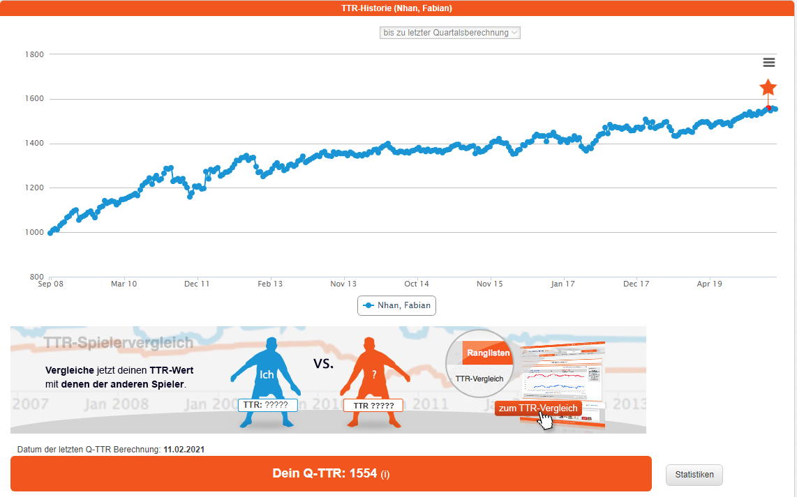

Welcome to my little blog. My name is Fabian Nhan, a
With this blog I would like to record my life and maybe show the one or the other how even someone with meager amazing skills such as mine tumbles through life ^^'. To give a quick summary about me, I work mainly on my studies
at the moment, while doing some side projects such as developing an app/web service.
But I also write on this blog, work on my table tennis skills, film videos about table tennis and play trackmania
and a wide variety of games of my friends from my study program. Love you guys! <3
With this blog I would like to officially announce my project Road to 1700 TTR. I will record all my table tennis plans/training/matches/emotions during the next couple of months and hopefully
entertain some of you during my bumpy ride. To my table tennis background, I started playing table tennis in my 5th year of school under the supervision of Friedhelm Dornhofer.
I earned some trophies during my childhood, but only in the local area. However never made it really far in the table tennis leagues in Bavaria. And was stuck for most of my life around
the 1500 range. I'd like to change that. Especially since I love table tennis from the bottom of my heart.

To achieve this goal I laid out some groundrules, I would like to follow during my next weeks of training: